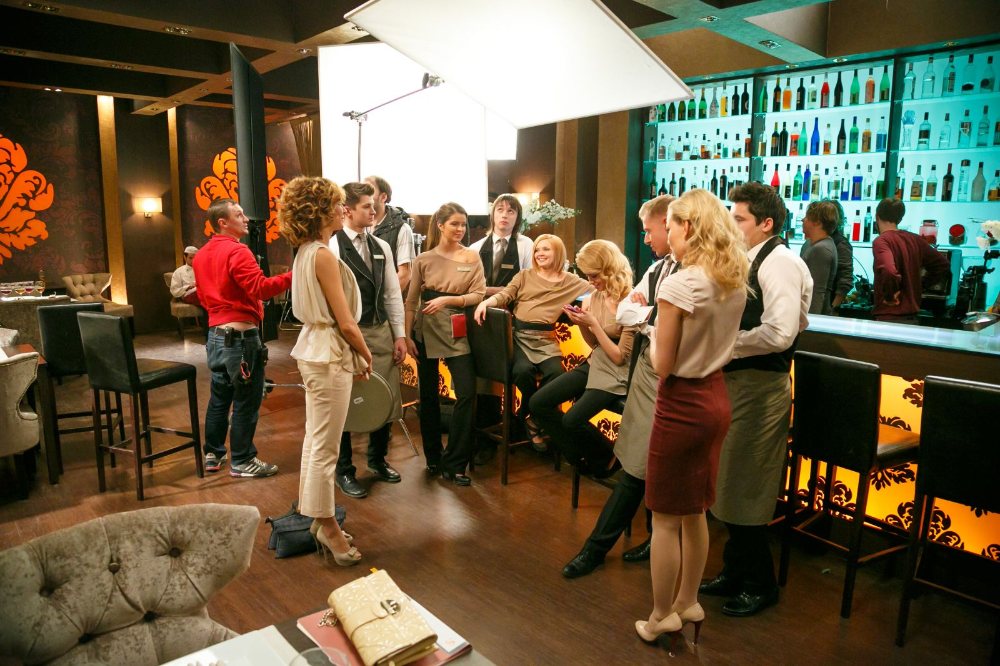
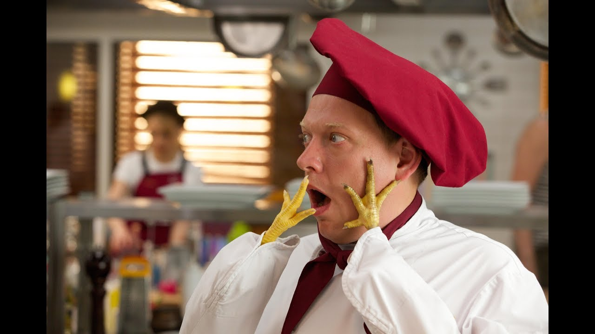

О сайте
Добро пожаловать на сайт, посвящённый ФД (фан-клубу) сериала "Кухня"! Этот проект создан для всех, кто любит этот потрясающий сериал, его атмосферу, героев и неповторимые шутки.
Здесь вы найдёте:
- Топ лучших серий с краткими описаниями;
- Информацию о персонажах и актёрах;
- Рандомные эпизоды для хорошего настроения;
- Интересные факты о съёмках и многое другое.
О сериале
Сериал "Кухня" — это комедийно-драматическая история, рассказывающая о жизни элитного ресторана «Claude Monet». Каждый день повара, официанты и владельцы сталкиваются с новыми вызовами — от сложных заказов до личных драм и курьёзных ситуаций.
Премьера сериала состоялась в 2012 году, и он быстро завоевал любовь зрителей благодаря ярким персонажам, необычным сюжетам и множеству смешных моментов.
Почему "Кухня" уникальна?
«Кухня» объединяет элементы комедии, драмы и даже детектива. Персонажи сериала обладают уникальными характерами, а их взаимоотношения полны искренности и юмора. Каждая серия рассказывает не только о жизни ресторана, но и о том, как важно дружить, любить и уметь смеяться над собой.
Наша цель
Мы хотим объединить всех поклонников сериала и дать возможность снова окунуться в любимую атмосферу, даже если эпизоды давно закончились. Читайте, смотрите, обсуждайте и делитесь впечатлениями!